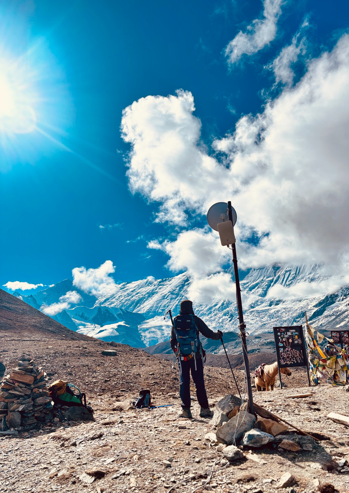
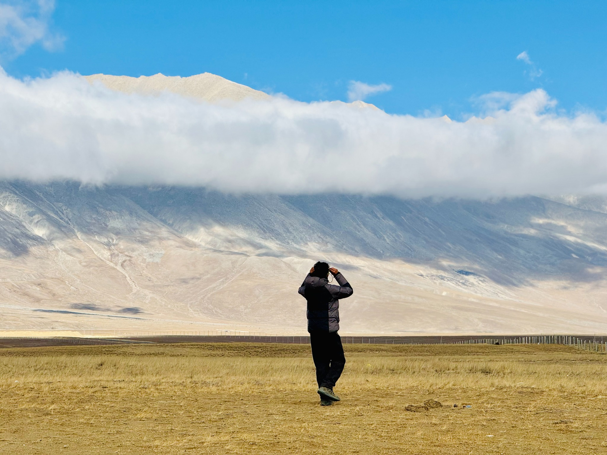

TRAVEL JOURNAL · NEPAL
Go where
the road fades.
A visual journal of mountains, long roads, quiet hills and the places that stay with me long after the journey ends.

Seven places.
Seven different stories.
I've travelled through very different corners of Nepal — from high alpine trails and trans-Himalayan landscapes to tea-covered hills and quiet viewpoints.
This journal keeps every destination separate. Each chapter has room for its own photographs, route notes, memories and future additions.
THE ARCHIVE
Places I've
walked into.
Pick a destination and travel through that chapter. New journeys can be added without changing the existing ones.
Tilicho
Lake
THE HIGH LAKE
Tilicho feels like a place where the landscape gets stripped down to sky, rock, ice and silence.
The journey climbs steadily into the high country of Manang, where the scenery changes quickly and every turn opens a different scale of mountain. Reaching the lake is less about a single viewpoint and more about the feeling of gradually entering a much bigger landscape.
This chapter is where I keep the photographs and memories from that journey — the trail, the weather, the people along the way and the moments between the obvious viewpoints.
Upper
Mustang

THE OPEN COUNTRY
Upper Mustang is all about scale — huge skies, dry valleys, bare slopes and a horizon that seems to keep moving away.
The landscape has a completely different character from Nepal's wetter mountain regions. The muted earth tones, dramatic cliffs and wide valleys create a sense of space that is difficult to capture in a single photograph.
For me, the appeal is the combination of landscape and road: the journey itself becomes part of the destination, with villages and mountain walls appearing slowly across the high desert.
Pathibhara
Yatra
THE EASTERN RIDGES
The journey to Pathibhara moves through the high, forested landscape of Taplejung and into one of eastern Nepal's best-known mountain pilgrimage routes.
The route has a different rhythm from a conventional trekking circuit. Forest, steep trails, mountain weather and the anticipation of reaching the temple all become part of the experience.
My Pathibhara chapter is reserved for the photographs, road journey, walking notes and the small details that are easy to forget once the trip is over.
Ama
Yangri Peak
ABOVE THE FOREST
Ama Yangri is the kind of mountain outing that packs a surprisingly big Himalayan feeling into a relatively compact journey.
The climb rises through forest toward an exposed ridge, with the landscape opening as altitude increases. On a clear day, the reward is a broad mountain panorama rather than a single dramatic summit view.
This chapter will hold my route notes, photographs from the climb, weather memories and the details of the trail that made the day memorable.
Kanyam
Tea Hills
THE GREEN HILLS
Kanyam trades snow peaks for rolling tea gardens, mist and intensely green hills — a completely different face of eastern Nepal.
The landscape makes the journey feel slower. Roads curve through tea estates, clouds settle over the ridges and the weather can change the mood of the entire scene within minutes.
My Kanyam chapter is a place for road-trip photographs, tea garden walks and the quieter moments that don't need a summit at the end.
Pikey
Peak
THE QUIET VIEWPOINT
Pikey Peak is a reminder that you don't always need a famous base camp to get an enormous Himalayan view.
The trail moves through villages, forest and open high ridges, gradually revealing a mountain panorama that can stretch across much of the eastern Himalaya when the weather cooperates.
I've kept this chapter deliberately open for sunrise photographs, trail moments, villages, route details and the personal story behind the trek.
Manungkot
Viewpoint
THE HILLTOP
Manungkot is a quieter kind of mountain experience: broad middle-hill views, open sky and the chance to slow down for a while.
Instead of chasing altitude, the attraction here is perspective. The hilltop opens the landscape outward, making it a good place to watch changing light and the layers of Nepal's central hills.
This chapter will grow into a small visual diary of the visit — photographs, the road to the viewpoint and the atmosphere of the place.
NEXT CHAPTER
The map
isn't finished.
Every new place gets its own page-sized chapter, its own gallery and its own story. The site is designed to keep growing with the journeys.
THE TRAVELER
Pujan
Guragain
I like journeys that leave something behind: a photograph, a story, a road I didn't know existed or a mountain view that stays in my head for months.
This is my personal archive of those trips through Nepal.
04 / CONTACT
Until the
next trail.
For route ideas, photography, collaborations or just a conversation about mountains and travel.
pujanguragain26@gmail.com ↗